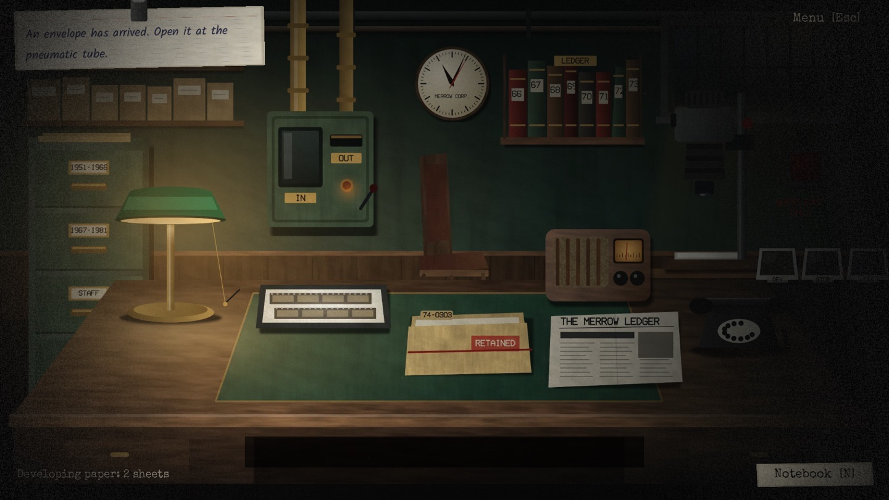

THE NEGATIVE BUREAU
Develop the photograph. Change the past. · Fotoğrafı banyo et. Geçmişi değiştir.

It is 1997. You are the night archivist in a secret darkroom. Retouch a photograph of an old crime, develop the print, and the past obeys it. The morning paper changes, and so do the people in it.
A psychological mystery for iPhone, iPad, Android, Windows and macOS, in English and Turkish. Night One: File 74-0303, The Lindqvist Mill. Offline, no ads, no accounts, no data collection.
Yıl 1997. Gizli bir karanlık odanın gece arşivcisisin. Eski bir suçun fotoğrafına rötuş yap, baskıyı banyo et; geçmiş itaat etsin. Sabah gazetesi değişir, içindeki insanlar da.
iPhone, iPad, Android, Windows ve macOS için Türkçe ve İngilizce bir psikolojik gizem oyunu. Birinci Gece: Dosya 74-0303, Lindqvist Fabrikası. Çevrimdışı; reklam, hesap ve veri toplama yok.